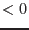
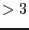
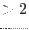

| instIdNotFoundExposure | error |
| | instrument string not RGS1 or RGS2. Wrong
input file or CAL could not determine instrument string correctly.
|
| instIdNotFoundPixels | error |
| | instrument string not RGS1 or RGS2. Wrong
input file or CAL could not determine instrument string correctly.
|
| wrongSER1 | error |
| | SER value  found. Problem in ODF. should never
happen
|
| wrongSER2 | error |
| | SER value  found. SER must be in range [0-3]
for version v16 of DPP software.
|
| dppIdNotFound | error |
| | DPP version string. DPP version returned by
CAL is not coded in rgsframes
|
| frameExposureTimes | error |
| | Frame numbers not increasing. Somehow
frame numbers are not increasing. Should not happen on a sorted
exposure table
|
| createGTI | error |
| | array sizes "time" "good" and "exposuretime" do
not match. Should not happen.
|
| sequenceIndexMismatch | error |
| | Sequence index and CCDid do not match.
There is a problem with the ODF. Frame integration times cannot be
calculated.
|
| windowSize | error |
| | The values held in the keywords WINDOWX0,
WINDOWDX, WINDOWY0, WINDOWDY are inconsistent with
telemetry. There is a problem with this ODF.
|
| missingCCDinAUX2 | error |
| | The ID of the current CCD could not be
found in the table AUX2 of the AUXiliary file. There is a
problem with this ODF.
|
| frameExposureTimes:HTR | error |
| | First value of SEQINDEX column is
zero. This probably resulted from an HTR mode file (*HTE.FIT).
The task cannot yet used to calculate exposuretimes for High Time
Resolution mode observations.
|
| selectedAddnCopyColumn:missingType | error |
| | A new column type was
encountered that was not yet implemented in this subroutine. This
is probably due to a change in the definition of the ODF. A new
version of the SAS should be obtained from the SOC.
|
| allFramesBad | warning |
| | All the frames were found to be unsuitable for one reason or another. This means that there is no GTI for this ccd.
corrective action: No action.
|
| wrapAround | warning |
| |
corrective action: Frame numbers were corrected for int16 wrap around
|
| grade1ser0 | warning |
| | The DPP
version string was set to a wrong value. A new set of CCF's should
be obtained.
corrective action: Default value for GRADE and SER set:
|
| allFramesTooManyPixels | warning |
| | All the frames were found to have a number of pixels greater than that set by maxrawpixels. This means that there is no GTI for this ccd.
corrective action: No action.
|
| allFramesTooRapidPixels | warning |
| | All the frames were found to have a pixel rate greater than that set by maxrawpixelrate. This means that there is no GTI for this ccd.
corrective action: No action.
|
| badAbortFlagAllFrames | warning |
| | None of the frames in the exposure extension had the correct value of ABORTFLG (should be 2). This means that there is no GTI for this ccd.
corrective action: No action.
|
| eventsLostAllFrames | warning |
| | All the frames in the exposure extension have  lost events. This means that there is no GTI for this ccd. lost events. This means that there is no GTI for this ccd.
corrective action: No action.
|
| badNdppAllFrames | warning |
| | All frames in table R?AUX1 of the aux file have NDPP values different from WINDOWDX WINDOWDY in table R?AUX2 of the same file. This means that there is no GTI for this ccd. WINDOWDY in table R?AUX2 of the same file. This means that there is no GTI for this ccd.
corrective action: No action.
|
| htrEventsLostAllFrames | warning |
| | All the frames in the exposure extension have  lost events. This means that there is no GTI for this ccd.
corrective action: No action.
|
| allFramesTooShort | warning |
| | All the frames were found to have TIMEDEL shorter than that specified in minexposuretime. This means that there is no GTI for this ccd.
corrective action: No action.
|
| HTRAUXCCDID | warning |
| | The CCDID of a given frame number
contains a value of a CCD, which is not active. This is an error in
the processing of the telemetry by the SOC.
corrective action: None
|
| HTRDataError | warning |
| | The instrument telemetry indicates that
a readout error on the instrument had occurred.
corrective action: None
|
| missingDeltaT | warning |
| | For HTR processing a gep in the
telemetry is detected. This warning indicates that the following
offsets of event times are estimated from an average value. A small
shift of the absolute event times may be the consequence.
corrective action: None
|
| htrAllFramesTooShort | warning |
| | All the frames were found to have TIMEDEL shorter than that specified in minexposuretime. This means that there is no GTI for this ccd.
corrective action: No action.
|